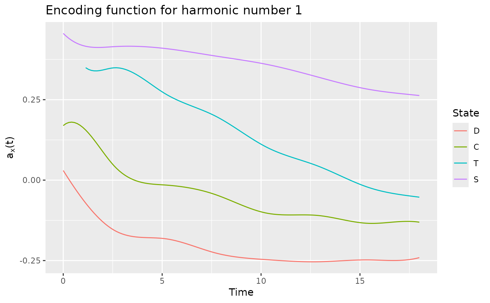
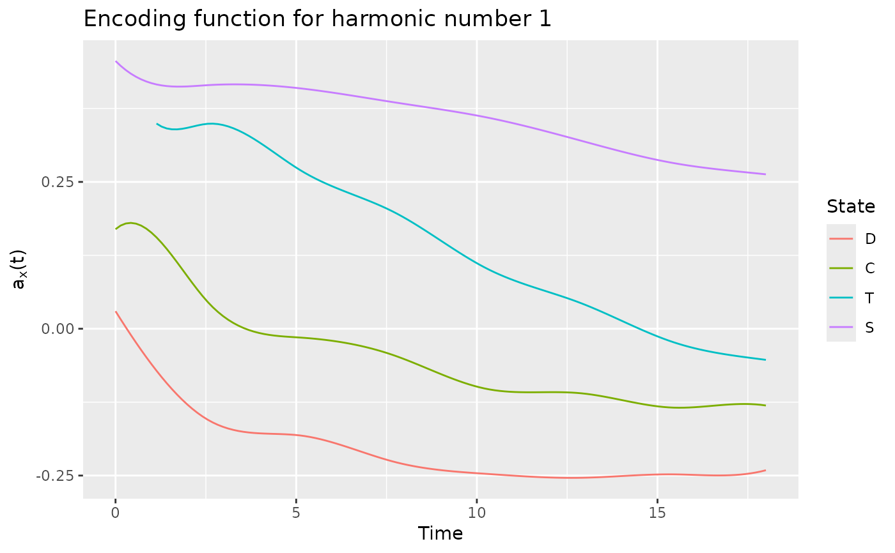

Care trajectories of patients diagnosed with a serious and chronic condition
data(care)Format
A data.frame containing three columns:
id id of individuals (2929 different ids)
time number of months since the diagnosis
state new state.
Source
https://larmarange.github.io/analyse-R/data/care_trajectories.RData https://larmarange.github.io/analyse-R/trajectoires-de-soins.html
Details
In this study, patients were followed from the time they were diagnosed with a serious and chronic condition and their care trajectories were tracked monthly from the time of diagnosis. The status variable contains the care status of each individual for each month of follow-up. Trajectories have different lengths.
The four states are:
D: diagnosed, but not in care
C: in care, but not on treatment
T: on treatment, but infection not suppressed
S: on treatment and suppressed infection
Examples
data(care)
head(care)
#> id time state
#> 1 3 0 D
#> 2 3 5 D
#> 3 9 0 D
#> 4 9 1 D
#> 5 13 0 D
#> 6 13 7 D
# Individuals has not the same length. In order to compute the encoding,
# we keep individuals with at least 18 months of history and work
# with the 18 first months.
duration <- compute_duration(care)
idToKeep <- as.numeric(names(duration[duration >= 18]))
care2 <- cut_data(care[care$id %in% idToKeep, ], 18)
head(care2)
#> id time state
#> 1 15 0 D
#> 2 15 4 T
#> 3 15 7 C
#> 4 15 8 D
#> 5 15 15 C
#> 6 15 18 C
# \donttest{
# It is recommended to increase the number of cores to reduce computation time
set.seed(42)
basis <- create.bspline.basis(c(0, 18), nbasis = 10, norder = 4)
fmca <- compute_optimal_encoding(care2, basis, nCores = 2)
#> ######### Compute encoding #########
#> Number of individuals: 1317
#> Number of states: 4
#> Basis type: bspline
#> Number of basis functions: 10
#> Number of cores: 1
#> ---- Compute V matrix:
#>
| | 0 % ~calculating
|= | 1 % ~31s
|== | 2 % ~30s
|== | 3 % ~30s
|=== | 4 % ~30s
|=== | 5 % ~30s
|==== | 6 % ~30s
|==== | 7 % ~30s
|===== | 8 % ~29s
|===== | 9 % ~29s
|====== | 11% ~29s
|====== | 12% ~28s
|======= | 13% ~28s
|======= | 14% ~28s
|======== | 15% ~27s
|======== | 16% ~27s
|========= | 17% ~26s
|========= | 18% ~26s
|========== | 19% ~26s
|========== | 20% ~25s
|=========== | 21% ~25s
|============ | 22% ~25s
|============ | 23% ~24s
|============= | 24% ~24s
|============= | 25% ~24s
|============== | 26% ~23s
|============== | 27% ~23s
|=============== | 28% ~23s
|=============== | 29% ~22s
|================ | 31% ~22s
|================ | 32% ~22s
|================= | 33% ~21s
|================= | 34% ~21s
|================== | 35% ~21s
|================== | 36% ~20s
|=================== | 37% ~20s
|=================== | 38% ~20s
|==================== | 39% ~20s
|==================== | 40% ~19s
|===================== | 41% ~19s
|====================== | 42% ~18s
|====================== | 43% ~18s
|======================= | 44% ~18s
|======================= | 45% ~17s
|======================== | 46% ~17s
|======================== | 47% ~17s
|========================= | 48% ~16s
|========================= | 49% ~16s
|========================== | 51% ~16s
|========================== | 52% ~15s
|=========================== | 53% ~15s
|=========================== | 54% ~15s
|============================ | 55% ~14s
|============================ | 56% ~14s
|============================= | 57% ~13s
|============================= | 58% ~13s
|============================== | 59% ~13s
|============================== | 60% ~12s
|=============================== | 61% ~12s
|================================ | 62% ~12s
|================================ | 63% ~11s
|================================= | 64% ~11s
|================================= | 65% ~11s
|================================== | 66% ~10s
|================================== | 67% ~10s
|=================================== | 68% ~10s
|=================================== | 69% ~09s
|==================================== | 71% ~09s
|==================================== | 72% ~09s
|===================================== | 73% ~08s
|===================================== | 74% ~08s
|====================================== | 75% ~08s
|====================================== | 76% ~07s
|======================================= | 77% ~07s
|======================================= | 78% ~07s
|======================================== | 79% ~06s
|======================================== | 80% ~06s
|========================================= | 81% ~06s
|========================================== | 82% ~05s
|========================================== | 83% ~05s
|=========================================== | 84% ~05s
|=========================================== | 85% ~04s
|============================================ | 86% ~04s
|============================================ | 87% ~04s
|============================================= | 88% ~04s
|============================================= | 89% ~03s
|============================================== | 91% ~03s
|============================================== | 92% ~03s
|=============================================== | 93% ~02s
|=============================================== | 94% ~02s
|================================================ | 95% ~02s
|================================================ | 96% ~01s
|================================================= | 97% ~01s
|================================================= | 98% ~01s
|==================================================| 99% ~00s
|==================================================| 100% elapsed=30s
#>
#> DONE in 30.05s
#> ---- Compute U matrix:
#>
| | 0 % ~calculating
|= | 1 % ~03m 12s
|== | 2 % ~03m 05s
|== | 3 % ~03m 04s
|=== | 4 % ~03m 10s
|=== | 5 % ~03m 08s
|==== | 6 % ~03m 07s
|==== | 7 % ~03m 05s
|===== | 8 % ~03m 02s
|===== | 9 % ~03m 00s
|====== | 11% ~02m 55s
|====== | 12% ~02m 52s
|======= | 13% ~02m 50s
|======= | 14% ~02m 47s
|======== | 15% ~02m 44s
|======== | 16% ~02m 42s
|========= | 17% ~02m 39s
|========= | 18% ~02m 36s
|========== | 19% ~02m 34s
|========== | 20% ~02m 32s
|=========== | 21% ~02m 30s
|============ | 22% ~02m 27s
|============ | 23% ~02m 25s
|============= | 24% ~02m 23s
|============= | 25% ~02m 21s
|============== | 26% ~02m 18s
|============== | 27% ~02m 16s
|=============== | 28% ~02m 15s
|=============== | 29% ~02m 13s
|================ | 31% ~02m 10s
|================ | 32% ~02m 08s
|================= | 33% ~02m 06s
|================= | 34% ~02m 04s
|================== | 35% ~02m 02s
|================== | 36% ~02m 00s
|=================== | 37% ~01m 58s
|=================== | 38% ~01m 56s
|==================== | 39% ~01m 54s
|==================== | 40% ~01m 52s
|===================== | 41% ~01m 50s
|====================== | 42% ~01m 48s
|====================== | 43% ~01m 46s
|======================= | 44% ~01m 44s
|======================= | 45% ~01m 42s
|======================== | 46% ~01m 40s
|======================== | 47% ~01m 38s
|========================= | 48% ~01m 36s
|========================= | 49% ~01m 34s
|========================== | 51% ~01m 32s
|========================== | 52% ~01m 29s
|=========================== | 53% ~01m 28s
|=========================== | 54% ~01m 26s
|============================ | 55% ~01m 24s
|============================ | 56% ~01m 22s
|============================= | 57% ~01m 20s
|============================= | 58% ~01m 18s
|============================== | 59% ~01m 16s
|============================== | 60% ~01m 14s
|=============================== | 61% ~01m 12s
|================================ | 62% ~01m 10s
|================================ | 63% ~01m 08s
|================================= | 64% ~01m 06s
|================================= | 65% ~01m 04s
|================================== | 66% ~01m 02s
|================================== | 67% ~01m 00s
|=================================== | 68% ~58s
|=================================== | 69% ~56s
|==================================== | 71% ~54s
|==================================== | 72% ~52s
|===================================== | 73% ~50s
|===================================== | 74% ~48s
|====================================== | 75% ~46s
|====================================== | 76% ~44s
|======================================= | 77% ~43s
|======================================= | 78% ~41s
|======================================== | 79% ~39s
|======================================== | 80% ~37s
|========================================= | 81% ~35s
|========================================== | 82% ~33s
|========================================== | 83% ~31s
|=========================================== | 84% ~29s
|=========================================== | 85% ~27s
|============================================ | 86% ~25s
|============================================ | 87% ~23s
|============================================= | 88% ~21s
|============================================= | 89% ~19s
|============================================== | 91% ~17s
|============================================== | 92% ~15s
|=============================================== | 93% ~14s
|=============================================== | 94% ~12s
|================================================ | 95% ~10s
|================================================ | 96% ~08s
|================================================= | 97% ~06s
|================================================= | 98% ~04s
|==================================================| 99% ~02s
|==================================================| 100% elapsed=03m 01s
#>
#> DONE in 181.37s
#> ---- Compute encoding:
#> DONE in 0.01s
#> ---- Compute Bootstrap Encoding:
#> **************************************************
#> DONE in 0.51s
#> Run Time: 212.54s
plotEigenvalues(fmca, cumulative = TRUE, normalize = TRUE)
 plot(fmca)
#> Warning: Removed 8 row(s) containing missing values (geom_path).
plot(fmca)
#> Warning: Removed 8 row(s) containing missing values (geom_path).
 plot(fmca, addCI = TRUE)
#> Warning: Removed 8 row(s) containing missing values (geom_path).

plotComponent(fmca, addNames = FALSE)
plot(fmca, addCI = TRUE)
#> Warning: Removed 8 row(s) containing missing values (geom_path).

plotComponent(fmca, addNames = FALSE)
 # }
# }